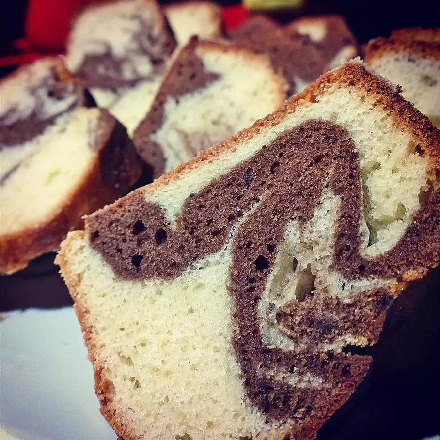

Marble Cake

Description
Marble cakes slices always look amazing - why wouldn't you want to try to make one? It's simpler than you think!
Ingredients
- 350g self raising flour
- 200g butter, softened
- 200g caster sugar
- 4 eggs
- 1 teaspoon vanilla extract
- 50g cocoa powder
Method
- Preheat oven to 350 degrees F (175 degrees C). Grease and flour one 10 inch tube pan.
- In a large bowl, cream the butter with the sugar. Beat in the eggs, then the milk.
- In another bowl, stir together the flour, baking powder and salt. Beat the flour mixture into the creamed mixture. Turn half of the batter into another bowl and stir in the cocoa.
- This cake can be served as is, just dusted with confectioners' sugar. Alternately, cut the cake in half horizontally and sandwich the layers together with jam or custard.
- Layer the light and dark batters by large spoonfuls and then swirl slightly with a knife.
- Bake the cake in at 350 degree F (175 degree C) for about 70 minutes, or until it tests done with a toothpick. Transfer to a rack to cool. Makes about 14 to 16 servings.